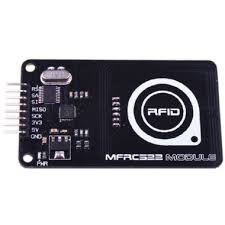

What is RFID Technology and How does it work
Radio-Frequency Identification is the use of radio waves to read, capture, and interact with information stored on a tag. Tags are usually attached to objects, and can be read from several feet away. Furthermore, the tag doesn’t always have to be in the direct line-of-sight to initiate interaction
An RFID tag is an easy way to assign a unique identity to an object. Additionally, they do not need an internal power source, while a tag can be as small as a grain of black pepper. Meaning they are easily embedded almost anywhere — hence their popularity.
How does it work
A basic RFID system comprises two parts: the tag, and the reader.
Tag
The RFID tag has an embedded transmitter and receiver. The actual RFID component contained in a tag has two parts: an integrated circuit for storing and processing information, and an antenna to receive and transmit a signal. The RFID tag has non-volatile memory storage, and can included either fixed or programmable logic for processing transmission and sensor data.

Tags can be passive, active, or battery-assistive passive.
Reader
The RFID reader features a two-way radio transmitted-reciever (transciever), sometimes referred to as an interrogator. The transceiver transmits an encoded radio signal to interogate the tag. The radio signal essentially wakes or activates the tag. In turn, the tag transponder converts the radio signal into usable power, and responds to the reader. The reader can come in many forms.
